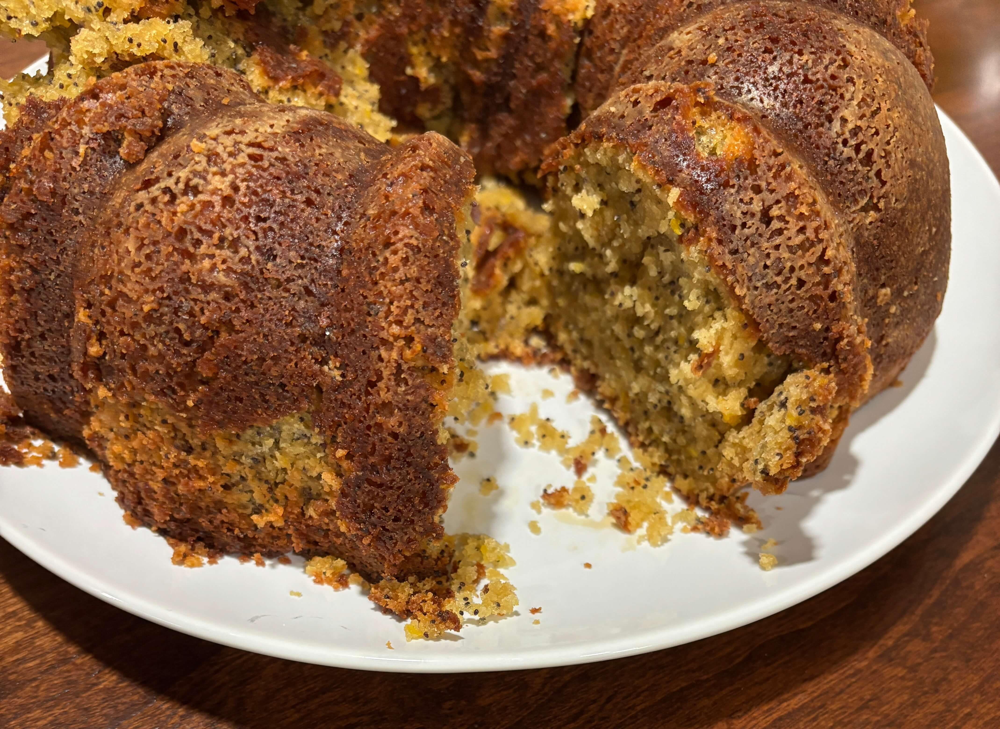

Home
Lemon Poppy Seed Pound Cake

Ingredients
- 1 cup softe butter (not marg)
- 3 eggs
- 2 tsp vanilla
- 1 tablespoon grated orange peel
- 1/4 cup frozen orange juice concentrate defrosted
- 4 tablespoons poppyseeds
- 2 1/2 cups flour
- 1 1/4 plain yogurt
- 1 tsp baking powder
- 1 tsp baking soda
- Baking spray and flour for pan
Steps
- Pre heat oven to 350
- Cream 1 cup soft butter (not marg) and 2 cups of brown sugar
- Add 3 eggs, 1 at a time and beat well. Add 1 tsp vanilla, 1 tablespoon grated orange peel, 1/4 cup frozen orange juice defrosted concentrate, and 4 tablespoons poppyseeds
- Add dry ingredients alternately with yogurt. 2 1/2 cups flour, 1 1/4 cups plain yogurt, 1 tsp paking powder, 1 tsp baking soda.
- Grease and flour pan then place in overn for 55-60 mins and let cool for 5 minutes